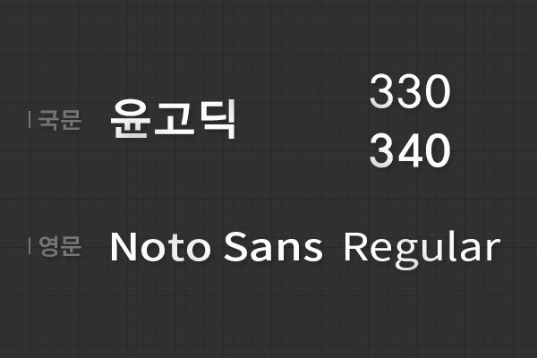
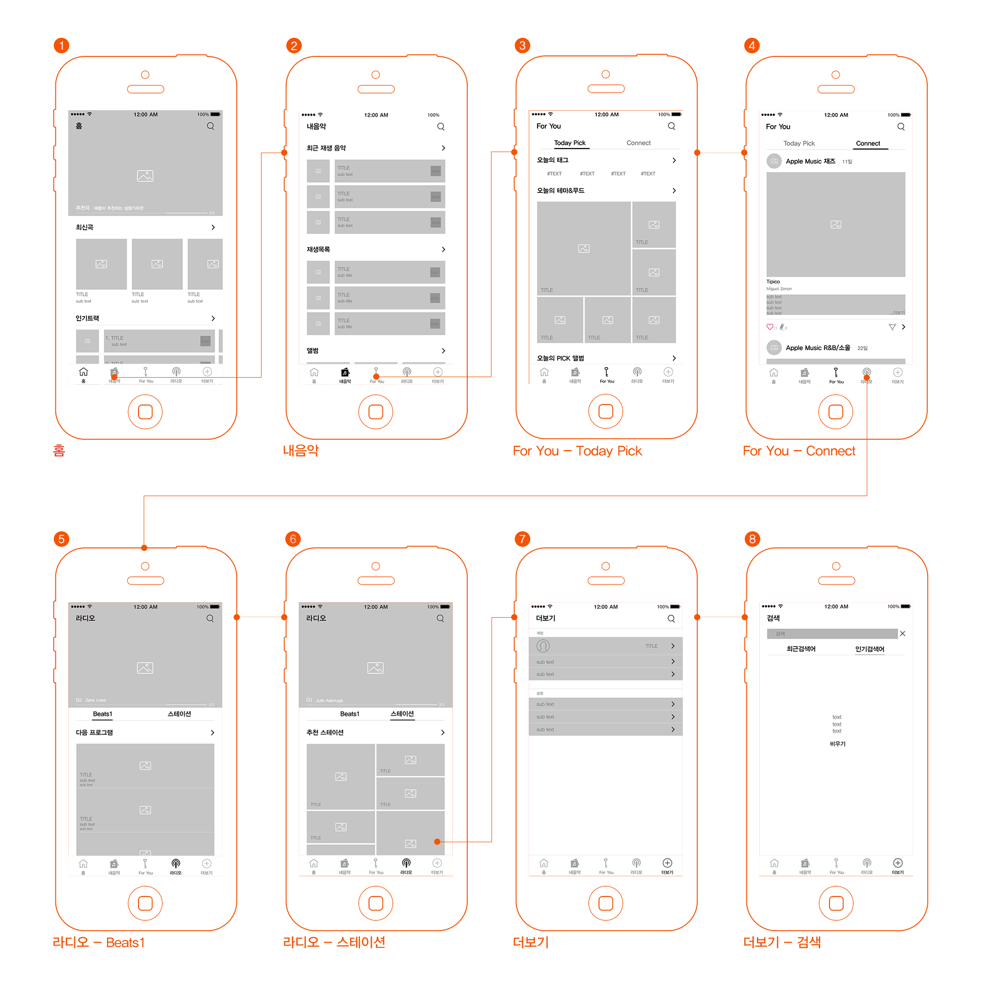
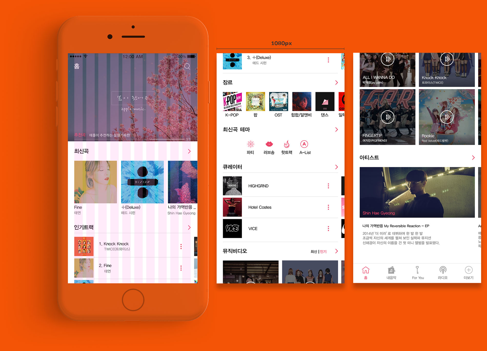
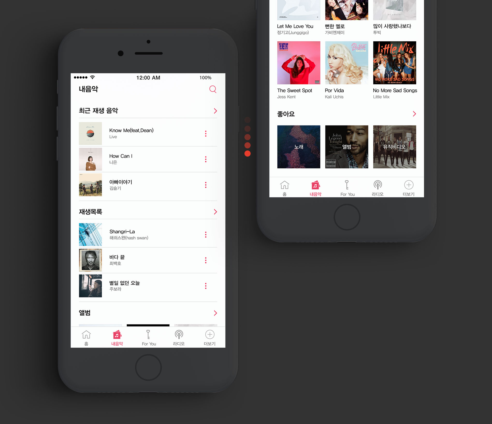
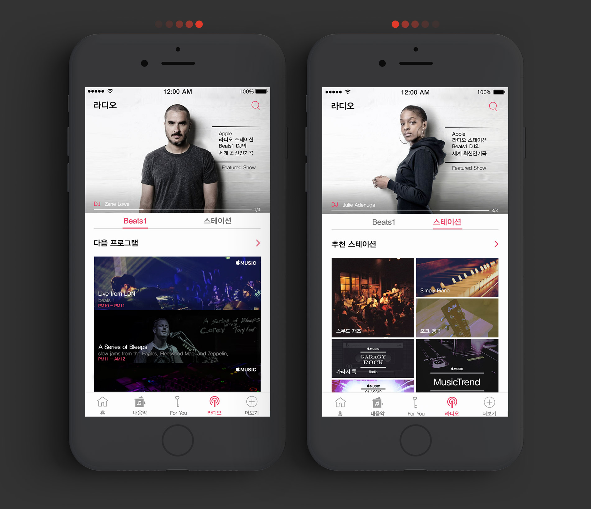

애플뮤직
음원 서비스 ‘애플 뮤직’은 전문가의 음악 추천이라고 할 수 있는 ‘큐레이션’이 강점인 서비스입니다.
이런 강점은 살리고 사용자에게 다소 불편함을 주는 인터페이스를 익숙하게 사용할 수 있도록 리디자인하였습니다.
애플뮤직
앱디자인
- 제작기간 2017.02 ~ 2017.03
- 프로젝트 개인 리뉴얼 프로젝트
- 역할 디자인 기여도 100%
- 사용기술PHOTOSHOP CS6 / AILUSTLATION CS6
As Is & To Be
문제발견과 문제해결
As Is
- 전체적으로 UI가 복잡해 원하는 기능을 바로 찾기 어렵다.
- 하단 메뉴 탭 바 : 하단 메뉴 탭의 메뉴명을 보고 정확히 어떤 기능을 하는지 사용자가 알기 어렵다.
- 라디오 페이지 : 라디오 콘텐츠메뉴의 내용을 보려면 1 Depth를 더 거쳐야 하는 번거로움이 있다.
사용자가 원하는 기능을 바로 찾기가 힘들고 복잡한 인터페이스를 갖고 있다. 또한 하단 메뉴 탭의 메뉴명이 익숙한 이름이 아니므로 들어가 보기 전까지는 무슨 기능의 페이지인지 인지하기 어렵다.
라디오 페이지의 첫 화면에는 추천 스테이션과 라디오 콘텐츠메뉴가 있는데, 바로 다음 내용을 볼 수 있는 것이 아니라 1 Depth를 더 거쳐야 한다는 번거로움이 존재한다.
To Be
- 사용자들에게 익숙하고 깔끔한 UI를 제공했으며, 하단 메뉴 탭의 메뉴명 또한 익숙한 이름과 중요도에 맞게 순서를 변경하였다.
- 홈화면 제작, 첫 화면에서 바로 최신음악과 인기 음악을 볼 수 있도록 제공하였다.
- 1 Depth를 더 거치지 않고 라디오 첫 화면에서 라디오의 콘텐츠를 제공하였다.
이전에는 사용성이 많이 고려되지 않은 UI였기 때문에 복잡한 단계를 제거하고 익숙하고 깔끔한 디자인을 하였다.
하단의 메뉴명도 들어가 보지 않아도 한눈에 알기 쉽도록 이름을 변경했으며, 라디오 페이지에서 각 메뉴를 탭 형식으로 바꾸고 콘텐츠를 첫 화면에 노출해 사용성에 불편함이 없도록 하였다.
Project Concept
프로젝트 컨셉 : 목표 / 색상 및 서체
기존의 장점을 담고 애플뮤직만의 아이덴티티를 유지하며, 사용성에 불편함이 없도록 인지하기 쉽게 직관적으로 디자인했습니다.
Color Gide
- #eb4468
- #7e7e7e
애플뮤직의 아이덴티티를 유지해 브랜드 색상을 적용했습니다.
Typaography Gide
단정하고 모던한 느낌의 윤고딕 300시리즈를 메인서체로 사용했습니다.
Wireframe
와이어프레임

Out Put
이미지아웃풋
홈
익숙하고 깔끔한 UI와 홈화면 추가, 첫 화면에서 바로 최신음악과 인기 음악을 볼 수 있도록 제공하였다.
Out Put Sub
내음악
사용자의 플레이리스트 및 음악 보관함이다. 최근 재생한 음악, 담아놓은 음악 목록과 좋아하는 음악을 보여준다.
For You
사용자 취향을 분석해 음악을 추천해주는 페이지다.
오늘의 태그를 추가해 더 다양한 음악을 추천했고, 데이터 수집 파악에 필요한 하트 아이콘을 쉽게 찾을 수 있도록 직관적인 디자인을 하였다.
라디오
사용자 취향을 생방송 라디오와 장르별 라디오 방송을 제공하는 페이지다. 각 메뉴를 탭 형식으로 바꾸고 콘텐츠를 첫 화면에 노출하였다.
더 보기
더 보기 메뉴를 추가해 기존의 검색기능을 넣었다. 설정의 기능으로 인기 큐레이션을 선택할 수 있다.